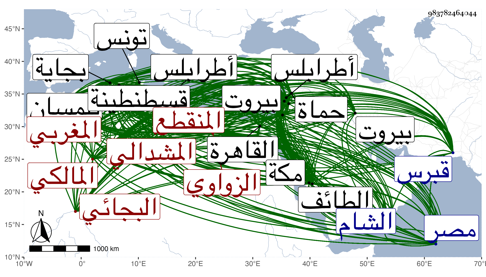

0902Sakhawi.DawLamic.ITO20230111-ara1.EIS1600.983782464044
Biography ID: 983782464044
466
محمد بن محمد بن أبي القسم بن محمد بن عبد الصمد بن حسن بن عبد المحسن أبو الفضل ابن العلامة الورع الزاهد أبي عبد الله ابن العلامة الزاهد المنقطع إلى الله المشدالي بفتح الميم والمعجمة وتشديد اللام نسبة لقبيلة من زواوة الزواوي البجائي المغربي المالكي ويعرف في المشرق بأبي الفضل وفي المغرب بابن أبي القسم وأبو القسم يكنى أبا الفضل أيضا . ولد في ليلة النصف من رجب سنة إحدى أو اثنتين وعشرين وثمانمائة وجزم ابن أبي عذيبة بسنة عشرين ببجاية وقال فيما أملاه على البقاعي كما زعمه أنه ابتدأ بها في حفظ القرآن وهو في الخامسة فأكمل حفظه في سنتين ونصف بل حفظ حزب سبح قبل أن يتهجى بغير إقراء أحد له وإنما هو بسماعه ممن يدرسه وتلا للسبع على أبيه والإمام الولي أبي عبد الله محمد بن أبي رفاع ولنافع فقط على الشيخين هرون المجاهد وأبي عثمان سعيد العيسوي وغيرهما وحفظ الشاطبيتين ورجز ... الخرازي في الرسم والكافية الشافية ولامية الأفعال لابن ملك في النحو والصرف وغالب التسهيل وجميع ألفيته وابن الحاجب الفرعي والرسالة وأرجوزة التلمساني في الفرائض ونحو الربع من مدونة سحنون وطوالع الأنوار في أصول الدين للبيضاوي وابن الحاجب الأصلي وجمل الخونجي والخزرجية في العروض وتلخيص ابن البنا في الحساب وتلخيص المفتاح والديوان لامرئ القيس وللنابغة الذبياني ولزهير بن أبي سلمى ولعلقمة الفحل ولطرفة بن العبد ثم أقبل على التفهم فبحث على أبي يعقوب يوسف الريفي الصرف والعروض ثم على أبي بكر التلمساني في العربية والمنطق والأصول والميقات وعن أبي بكر ابن عيسى الوانشريسي أخذ الميقات أيضا ثم على يعقوب التيروني في النحو ثم على أبي إسحاق إبراهيم بن أحمد بن أبي بكر فيه والمنطق ثم على موسى بن إبراهيم الحسناوي في الحساب ثم الحساب أيضا مع الصرف والنحو والأصلين والمعاني والبيان وعلوم الشرع التفسير والحديث والفقه على أبيه ثم على أبي الحسن علي بن إبراهيم الحسناوي أظنه أخا موسى في الأصلين . ثم رحل في أول سنة أربعين إلى تلمسان فبحث على محمد بن مرزوق ابن حفيد العالم الشهير وأبي القسم بن سعيد العقباني وأبي الفضل بن الإمام وأبي العباس أحمد بن زاغو وأبي عبد الله محمد بن النجار المعروف لشدة معرفته بالقياس بساطور القياس وأبي الربيع سليمان البوزيدي وأبي يعقوب يوسف بن إسماعيل وأبي الحسن علي بن قاسم وأبي عبد الله محمد البوري وابن أفشوش فعلى الأول في التفسير والحديث والفقه والأصلين والأدب بأنواعه والمنطق والجدل والفلسفيات والطب والهندسة وعلى الثاني الفقه وأصول الدين وعلى الثالث التفسير والحديث والطب والعلوم القديمة والتصوف وعلى الرابع التفسير والفقه والمعاني والبيان والحساب والفرائض والهندسة والتصوف وعلى الخامس في أصول الفقه والمعاني والبيان ومما قرأه عليه مختصر ابن الحاجب الأصلي ، وكان مرجع الناس بتلك البلاد في أمر المختصر فكان كما نقله البقاعي عن علي البسطي إذا عرض للشيخ إشكال في الأصول أمر بعض تلامذته أن يذكره بحضرته لعله يحله وعلى السادس في الفقه وكان أعلم الناس به ولكن لم يكن له إلمام بالعربية فأمر بعض تلامذته فقرأ عليه بحضرته شرح الألفية لابن عقيل فصار يعرفها فيما قاله البسطي أيضا ، ونحوه حكاية أبي الفضل نفسه أن طلبة تلمسان أخذوه لاستفادة البوزيدي منه في العربية فنهى الشيخ وقيل له أنه يزدريك ويتشدق بك في المجالس ويجعل كلامك ضحكة بحيث أنه امتنع من إقرائه فيما كان يقرأ فيه وقال أنه متى حضر عندي تركت الإقراء جملة قال أبو الفضل فكنت إذا حضرت لا يخرج إلى الناس فيسمعني لذلك الطلبة ما يسوءني وتمادى له الحال على ذلك مدة إلى أن خرج يوما لقسم بلد له فاستأجرت حمارا ولحقته فسلمت عليه فرد وقال ما تريد فقلت القراءة وفتحت الكتاب وشرعت أقرأ فاشتد عجبه وعلم بطلان ما نقل له عني واستغفر الله وصرت عنده بمكانة . وعلى السابع الحساب والفرائض وعلى الثامن في الحساب والجبر والمقابلة وغيرهما من أنواعه والهيئة وجر الأثقال وعلى التاسع في التقاويم والميقات بأنواعه من فنون الأسطرلابات والصفائح والجيوب والهيئة والأرتماطيقي والموسيقا والطلسمات وما شاكلها وعلم المرايا والمناظر وعلم الأوفاق وعلى العاشر في الطب . ثم عاد إلى بجاية في سنة أربع وأربعين وقد برع في العلوم واتسعت معارفه وبرز على أقرانه بل على مشايخه بحيث كتب ابن مرزوق لأبيه فيما قيل أنه قدم علينا وكنا نظن به حاجة إلينا فاحتجنا إليه أكثر قال البقاعي : وحدثني الصالح أحمد الزواوي عن بعض فضلاء المغاربة أن ابن مرزوق قال ما عرفت العلم حتى قدم على هذا الشاب ، فقيل كيف قال لأني كنت أقول فيسلم كلامي فلما جاء هذا شرع ينازعني فشرعت أتحرز وانفتحت لي أبواب من المعارف أو نحو هذا ، ونقل البسطي عنه أنه قال إن عاش كان عالم المسلمين وأنه كان هو وأبو الفضل بن الإمام يأمران تلامذتهم بالقراءة عليه فأسرع إليه غالبهم فانتفعوا وكان منهم شخص يقال له أحمد بن زكرى لازمه وتحقق بصحبته فهو الآن المشار إليه في تلمسان وإنه كان لا يسامى أبا الفضل في تلمسان إلا الشريف أحمد بن أبي يحيى ولم يكن يثبت له في النحو سواه فكانا يتناظران في غالب المجالس ويجري بينهما الكلام وابن مرزوق يحكم بينهما وربما طال بينهم الجدل فيسكت ويدعهما حتى يسكتا وهما كفرسي رهان غير أن أبا الفضل أسد كلاما وأشد تحقيقا وأنفذ نظرا وأوسع دائرة في فنون العلم هذا مع كون أبي الفضل في سن ولد الشريف كما أخبره ، وتصدر للإقراء بيجاية إلى أن رحل منها في أواخرها أو أوائل التي بعدها فدخل بلد العناب وقسنطينة وحضر عند علمائها ساكتا ثم دخل تونس في أوسط سنة خمس وحضر عند جميع علمائها ساكتا ثم رحل في أواخرها نحو المملكة المصرية في البحر في مركب نصارى جنويين فارسوا على البر الشمالي في بلاد القطران ثم لججوا في البحر فسكن عنهم الريح ثم أتاهم ريح عاصف فساقهم إلى جزيرة قبرس إلى ناحية اليان فمروا على اللمسون والملاحة ثم أرسوا في الماغوصة ثم رحل منها في البر إلى الأفقسية مدينة الملك ورأى بها غرائب وحصل له مع بعض أساقفتهم مناظرة ، ثم رحل من قبرس في ذي القعدة منها فأرسوا إلى بيروت ثم رحل إلى دمشق ثم طوف في بلاد الشام طرابلس وحماة ثم قطن القدس مدة وشاع ذكره إلى أن ملأ الأسماع وصار بشرحه كلمة إجماع ، ثم حج سنة تسع وأربعين وجاور ثم رجع إلى القاهرة مع الكمال بن البارزي فكان حظه وإن لم يبلغ كل ما يستحقه نوعا من علمه على غير قياس فزادت حظوته عند أهل المملكة السلطان وأركان الدولة سيما الكمال وصهره الجمال ، ودرس للناس في عدة فنون فبهر العقول وأدهش الألباب فكان يقرأ القارئ بين يديه ورقة أو أكثر ثم يسرد ما تتضمنه من تصوير المسائل ويستوفي كلام أهل المذهب إن كان فقها وكلام الشارحين إن كان غير ذلك ثم يتبع ذلك بأبحاث تتعلق بتلك المسائل كل ذلك في أسلوب غريب ونمط عجيب بعبارة جزلة وطلاقة كأنها السيل وتحرز بديع بحيث يكون جهد الفاضل البحاث عند غيره أن يفهم ما يلقيه ويدرك بعض إدراك ما يجليه ولقد حدثني غير واحد من ثقات الأفاضل أن الطلبة قالوا له تنزل لنا في العبارة فإنا لا نفهم جميع ما تقول فقال شيئا يكاد أن يكون كشفا لا تنزلوني إليكم ودعوني أرقيكم إلي فبعد كذا وكذا لمدة حدها تصيرون إلى فهم كلامي فكان الأمر كما قال وقد حصلت بيننا اجتماعات وصحبة ورأيت منه من حدة الذهن وذكاء الخاطر وصفاء الفكر وسرعة الإدراك وقوة الفهم وسعة الحفظ وتوقد القريحة واعتدال المزاج وسداد الرأي واستقامة النظر ووفور العقل وطلاقة اللسان وبلاغة القول ورصانة الجواب وغزارة العلم وحلاوة الشكل وخفة الروح وعذوبة المنطق ما لم أره من أحد قال وأخبرت عنه أن أباه أمره بمطالعة غزوة بدر وإلقائها في الميعاد فحفظها برمتها من سيرة ابن إسحق بما فيها من الأشعار وحاضر بها من العشاء إلى نحو نصف الليل وأصبح فساقها حتى بهر الحاضرين وأن أخا له كان يقرأ عليه في بعض العلوم فيجتهد في المطالعة حتى يتوهم أنه يفوق عليه فإذا وقع الدرس وقفه على مباحثات وإشكالات ما خطرت له مع امتحانهم له مرارا فيجدونه في خلوته نائما غير مكترث بمطالعة ولا غيرها ثم حضرت درسه في فقه المالكية بجامع الأزهر في ذي القعدة سنة اثنتين وخمسين فظهر لي أني ما رأيت مثله ولا رأى هو مثل نفسه وإن من لم يحضر درسه لم يحضر العلم ولا سمع كلام العرب ولا رأى الناس بل ولا خرج إلى الوجود قال ومن سمع كلامه في العلم علم أنه يخبر عن مشاهدة وان غيره يخبر عن غيبة وليس المخبر عن المشاهدة كالمخبر عن المعاينة ولهذا نجد كلامه في القلب اثبت من كلام غيره لم أر أعظم تحريكا للهمم من حاله ولا أشد فعلا للقلوب من مقاله سماع درس واحد من تقريره أكثر نفعا من سماع مائة من غيره هيئة لعمري لا يحاط بكنهها وهو آية أبرزه الله في هذا العصر للعباد فمن قبلها يرجى له بركتها ومن أباها خشي عليه معاجلة العقوبة لا يشبه كلامه في جزالته وجلالته إلا كلام العرب العرباء ولا يضاهيه في طلاقته ورصانته سوى فحول الألباء على أنه محشو من دقيق المعاني بما يمنع لعمري من التصنع ويشغل عن التكلف بل تلك منه سجية غير محتاجة إلى روية وهمة علية ما جنحت قط في التحصيل لدنية :
| صفات يغار البدر منها وينثني | لها خضعانا رءوس المنابر |
لكنه مخل المروءة كثير الترفع على أصحابه سيما في الملأ عظيم التهاون بهم عديم النفع لهم لين الجانب لمخالفيه غير بعيد من نفعهم وهو يستر هذه النقائص ببعد غوره غاية الستر فلا يذوقها منه إلا النحرير في أوقات الغفلات فإذا ظهر له منها شيء انهتك الباقي فهو لعمري أعجوبة الزمان حفظا وفهما وتوقدا وذكاء وعلما وخبثا ومكرا ودهاء وتواضعا وكبرا قال ومن عجائب حظه أنه تحبب لشيخنا ابن حجر بأنواع التحبب وأتاه لبيته فلم ير منه إنصافا وظن أن الإشاعات بفضائله مغالاة أو غلط ممن لا نباهة له فترفع حينئذ عن التردد إليه مع توقع أن يراه في بيوت بعض الأكابر فيريه من أنظاره ودقة فكره ما يتبع ... فكره ويعلي عنده قدره بحيث كنت أظن أن ذلك يفضي إلى ضد المراد من غيظ وتعاد واجتهدت من الجانبين في الاجتماع على وجه جميل فلم أستطع فأراد الله أن مرض ابن حجر بأمراض منها ضيق النفس في نحو نصف ذي القعدة سنة اثنتين وخمسين وطال مرضه فذكره له الكمال والشرف بن العطار وأنه يتعين أن ينظره ليشخص مرضه وينظر علاجه فإنه في الطب واحد عصره وفريد دهره وكان قد تكرر على سمعه من معارفه وعظمته عند الأكابر وعقله وسياسته وثباته ورزانته ما قرر عنده أمره وملأ صدره حتى اشتهى أن يراه ولو نظرة فطلبه منهما وألح عليهما فكلماه في ذلك فامتنع لكراهته أن يشتهر بطب ولما تقدم من عدم إنصافه فلم يزالا يتلطفان به ويترفقان إلى أن أجاب فعاده في يوم الأحد منتصف ذي الحجة وهو في أشد المرض فابتهج به ابتهاجا كثيرا وعظمه تعظيما كبيرا ثم نقل عن ابن الهمام أنه قال : هذا الرجل لا ينتفع بكلامه ولا ينبغي أن يحضر دروسه إلا حذاق العلماء وسئل عن النسبة بينه وبين أبي القسم النويري فقال جهد أبي القسم أن يفهم عنه ، وعن الزين قاسم الحنفي قال ما سمعت العلم من مثله ، وعن الأمين الأقصرائي أنه وصفه بالشيخ الإمام العلامة خلاصة الزمان والعلماء . وعن الشهاب الأبدي أنه كتب لوالد صاحب الترجمة أن الله خول سيدنا وملاذ أنسنا أبا الفضل ولدم الأسعد من الفتوح الإلهية والمنن الربانية مما امتحنه صالح دعائكم وحسن طويتكم واعتقادكم أن جعله الله بحرا لعلوم زاخرة وعنصرا لفضائل فاخرة ومحاسن متوالية متضافرة فكم ابدى من دقائق خضعت لها الرقاب ونفائس هامت بها ذوو الألباب ومباحث شريفة كشفت دونها الحجاب فأبكت ذوي العقول وحج أصحاب المعقول والمنقول فدانت له المملكة المصرية والأقطار الشامية والبلاد القاصية والدانية فحاز الرياستين وقام بالوظيفتين فالرؤساء حول دياره مخيمون وعظماء المذهب بفناء منزله محومون فالوصف يقصر عما هو فيه أبقى الله وجوده وزاد في معاليه . قلت وقد بالغ البقاعي بل جازف وصدر ترجمته بقوله : الإمام العلامة نادرة العصر وأعجوبة الزمان وجعله عمدة في الخوض في المناسبات التي خولف في شأنها حيث زعم أن أبا الفضل قال له الأمر الكلي المفيد لعرفان مناسبات الآيات في جميع القرآن وهو أنك تنظر الغرض الذي سيقت له السور وتنظر ما يحتاج إليه ذلك الغرض من المقدمات وتنظر إلى مراتب تلك المقدمات في القرب والبعد من المطلوب وتنظر عند إنجرار الكلام في المقدمات إلى ما يستتبعه من إشراف نفس السامع إلى الأحكام واللوازم التابعة له التي تقتضي البلاغة شفاء العليل بدفع عناء الاستشراف إلى الوقوف عليها فهذا هو الأمر الكلي على حكم الربط بين جميع أجزاء القرآن فإذا فعلت ذلك تبين لك إن شاء الله تعالى وجه النظم مفصلا بين كل آية آية في كل سورة سورة والله الهادي انتهى . وقد كان شيخ المذهب الحنبلي وقاضيه العز الكناني رحمه الله يحلف أن قائلها فضلا عن ناقلها لا ينهض لتمشيتها في أقصر السور . وسمعت البقاعي يقول غير مرة أنه لم يكن ينظر في دروسه التفسيرية في غير القرآن وأنه يستلقي على قفاه ويتأمل فيأتي بصواعق لا ينهض غيره لها وأنه كان يفعل ذلك في كل علم يقرؤه أو يقرئه لا يزيد على نظر المتن وحكى عن علي البسطي ذلك فقال كان أبو الفضل إذا قرأ علما لا يقرأه غيره ولا يزيد على تكرير مطالعة المتن ولا يطالع شرحا ولا غيره ، وناقض البقاعي قوله ونقله حيث قال أنه شرح جمل الخونجي قبل استكماله ثماني عشرة سنة على طريقة حسنة وهي أنه ينظر في شروحها لابن واصل الحموي والشريف التلمساني وسعيد العقباني وابن الخطيب القشنبليني وابن مرزوق فما أجمعوا عليه ساق معناه وكذا ما زاده أحدهم وما اختلفوا فيه ذكر ما رأى أنه الحق كل ذلك بعبارة يبتكرها ثم تمم ذلك بما وقع للمتقدمين من علماء المسلمين فمن قبلهم في تلك المسئلة مما يرى أنه محتاج إليه من التحقيقات ، وممن جازف في شأنه مما أظن أنه تبع فيه البقاعي ابن أبي عذيبة مع كونه ليس بعمدة فقال : الإمام العلامة أوحد أهل زمانه قدم علينا القدس سنة سبع وأربعين فأقرأ العضد وكتب المنطق والمعقولات وشهد له الأئمة ببلدنا وبدمشق ومصر وطرابلس أنه أوحد أهل الأرض وأنه عديم النظير في جنس بني آدم وأنني عاجز الآن عن عبارة أصفه بها فإن كل عبارة هو فوقها ثم دخل مصر فولي تدريس القبة المنصورية فدرس بها العجب العجاب وتعين لقضاء الشام ثم لمصر فأبى ولا يحضرني الآن من يضاهيه في كثرة علومه ثم نقل عن العز القدسي أنه قال ولو سكتوا أثنت عليه الحقائب وعن ابن الهمام أنه قال سألته عن مسئلة في أواخر الأصول فأجابني عنها بأجوبة من لو طالع عليها ثلاثة أشهر لم يجب فيها بمثله ، وعن سعد بن الديري قال كنت إذا كلمته بكلام يفهم آخره قبل أن أتمه وكان اشتغاله ببجاية على أبيه أولا ثم انتقل عنه وجال في بلاد الغرب ولزم ابن مرزوق ونظراءه ثم قدم إلى هذه البلاد وهو أحد الأئمة في الدنيا في علوم عديدة سيما المعقولات ولما دخل مصر وارتجت له قال أبو القسم النويري أي شيء هذا الطبل الذي طبل بمصر فبلغه فقال : قوله ذلك عني يريد أني مرزوق الظاهر فارغ الباطن فليحضر ليرى انتهى . وممن أخذ عنه بمكة عالم الحجاز البرهان بن ظهيرة وبالشام ابن قاضي عجلون وبالقدس الكمال بن أبي شريف وبالقاهرة الشهاب البيجوري والديسطي وابن الغرز وكان خروجه من بلاده مغاضبا لأبيه وبغير رضاه واجتمع في الشام بالشمس الشرواني ورام الأخذ عنه فامتنع معللا بما شاهده من سلوكه غير ما يألفه من التأدب والتهذب ، وكان الناس في صاحب الترجمة فريقان فقال لي المحيوي عبد القادر المالكي والله أنه لا عهد له بالفقه بل سمعت قراءته الفاتحة في الصلاة فما أجادها وتكلم في ديانته بما وافقه غيره من ثقات أهل مكة عليه مما لا أحب الإفصاح به ونحوه قول أبي القسم النويري أنه لا يعرف مسئلة من المسائل يعني الفقهيه ولما لقي أبو الفضل بمكة محمدا القفصي أحد نبلاء جماعة عمر القلشاني وتكلم معه في مسائل أم الولد والمدبر لم يهتد لكثير من ذلك بحيث علم من نفسه التقصير في الفقه وكان ذلك باعثا له على سؤال محمد الجزولي في التوجه هو وإياه إلى الطائف ليمر معه على البيان والتحصيل لابن رشد ففعلا ذلك وكذا كان صاحبنا الجمال ابن السابق يقدح في علمه وديانته بعد أن كان ممن قلد في شأنه أولا وبلغني عن الشرواني أنه كان يتعجب من المصريين كيف راج عليهم ويقول أنه قال لي والله ما أخاف من مصر إلا من ابن حسان قال فقلت له فأنت آمن لأن المشار إليه مع كونه في العلم والدين بمكان في شأن غير شأنك ولا رغبة له في المجادلة إلا إن دعت ضرورة دينية أو كما قال ، وكان العز الكناني في وصفه متوسط الحال بل سمعته غير مرة يقول إنه لا نسبة له بالعلاء القلقشندي ولا ينهض لمقاومته في المناظرة أو نحو هذا ، وأما شيخنا الذي لم يسعد صاحب الترجمة بالأخذ عنه فإنه لما بالغ عنده البقاعي في تقدمه في الطب وجاء بسبب ذلك إليه في مرض موته كما تقدم لم ينته في وصفه إلى الحد الأعلى بل صرح بكونه كالآحاد وإليه المرجع في معرفة الناس حتى أنه كان ينوه أبي عبد الله التريكي لقرب اجتماعه به من الاجتماع الأول لصاحب الترجمة ولا يلتفت لما تقدم ، هذا مع زعم البقاعي بين يديه بما كنت والله أستحي من التلفظ به أنه لو نظر في الرجال ومتعلقاتها سنة ما كان يلحق ثم مع تركه للأخذ عن شيخنا المرحول إليه من سائر الآفاق للدراية والرواية سمع على سارة ابنة ابن جماعة جزء ابن الطلاية ببيتها وعلى أربعين من العلماء والمسندين ختم البخاري بالظاهرية القديمة وقد انتدب للرد عليه في سؤاله الذي أبرزه على لسان تلميذه البقاعي في تعليل الرافعي الشمس بن المرخم وأيده فيه التقى الحصني والكافياجي وغيرهما من المحققين هذا مع سكوته الزائد وعدم كلامه في المحافل بل ربما أقرأ في بيته والباب مجاف حتى لا يدخل عليه أحد إلى غير ذلك مما يؤذن بحقيقة الحال ، ولما كان بالقاهرة ثار على قاضي المالكية البدر بن التنسي وجرأ عليه الديسطي وأخذا معهما الأبدي ليتقويا به لشهرة علمه وديانته وعدم غرضه حين توقف البدر في قتل الكيمياوي المنتسب للشرف حتى قتل وقد البدر غبنا وكان هذا يؤمل تقدمه بقتله لكونه موافقا لغرض السلطان فخاب أمله وللجمالي ناظر الخاص في تأخيره اليد البيضاء نعم ساعده الكمال بن البارزي وهو ممن كان يطريه حتى انتزع له تدريس التفسير بقبة المنصورية من المحيوي الطوخي وعمل له إجلاسا حضره فيه الأكابر ولم يجسر أحد على التكلم معه لإغلاظه على الزين قاسم الزفتاوي لما تكلم معه فجبن غيره وكنت ممن حضر هذا الدرس ورأيت من سرعة سرده وطلق عبارته وقوة جنانه في تأديته عجبا وإن كان مقام التحقيق وراء ذلك ، ولم يلبث أن رغب عنه للسيف الحنفي وعن تصدير له بالأقصى وجوالي وغيرهما للبقاعي وتشتت في البلاد والقرى وركب البحر والبر وتطور على أنحاء مختلفة وهيئات متنوعة إلى أن مات غريبا فريدا في عنتاب أواخر سنة أربع وستين لعله في شوالها أو الذي بعده ورثاه البقاعي بما لم يكمله . وبالجملة فكان غاية في جودة الذهن وسرعة الإدراك وقوة الحافظة إلا أنه كان سريع النسيان قليل الاستحضار ولأجل هذا لم يكن يتكلم في المجالس إلا نادرا خوفا من الاستظهار عليه بالمنقول وإذا طالع محلا أتى فيه بما يبهر السامع وقد تكرر اجتماعي معه بعد المجلس المشار اليه وما كنت أحمد انحرافه عن شيخنا وأرغب في لقاء أبي عبد الله التريكي لمزيد حبه شيخنا وتقدمه على صاحب الترجمة في الشرعيات ومحبته في المباحثة والمناظرة والمذاكرة ، والبقاعي على العكس في هذا كله والله تعالى قبيله . هذا وهو لما عرض عليه أخي بعض محفوظاته وصفني في إجازته بما لا أفرح من مثله ولكن الإنصاف مطلوب ، وله نظم فمنه مما قاله بتلمسان في سنة أربعين يخاطب بعض أخلائه ببجاية :
| برق الفراق بدا بأفق بعادنا | فتضعضعت أركاننا لرعوده |
| كيف القرار وقد تبدد شملنا | والبين شق قلوبنا بعموده |
| لله أيام مضت بسبيلها | والدهر ينظم شملنا بعقوده في أبيات |
